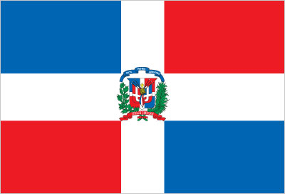
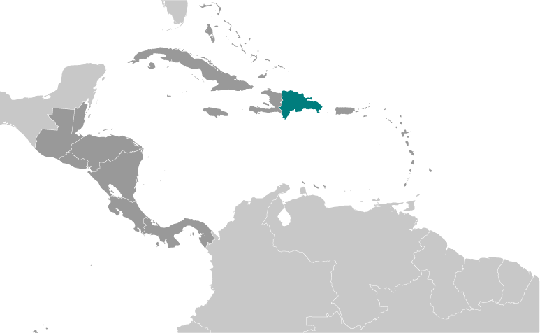
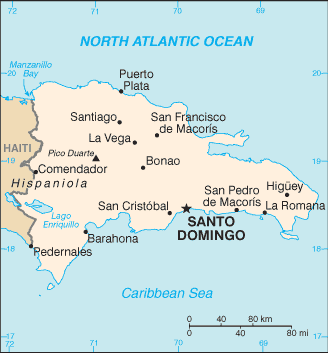

Central America and Caribbean :: DOMINICAN REPUBLIC
Introduction :: DOMINICAN REPUBLIC
-
The Taino - indigenous inhabitants of Hispaniola prior to the arrival of the Europeans - divided the island into five chiefdoms and territories. Christopher COLUMBUS explored and claimed the island on his first voyage in 1492; it became a springboard for Spanish conquest of the Caribbean and the American mainland. In 1697, Spain recognized French dominion over the western third of the island, which in 1804 became Haiti. The remainder of the island, by then known as Santo Domingo, sought to gain its own independence in 1821 but was conquered and ruled by the Haitians for 22 years; it finally attained independence as the Dominican Republic in 1844. In 1861, the Dominicans voluntarily returned to the Spanish Empire, but two years later they launched a war that restored independence in 1865. A legacy of unsettled, mostly non-representative rule followed, capped by the dictatorship of Rafael Leonidas TRUJILLO from 1930 to 1961. Juan BOSCH was elected president in 1962 but was deposed in a military coup in 1963. In 1965, the US led an intervention in the midst of a civil war sparked by an uprising to restore BOSCH. In 1966, Joaquin BALAGUER defeated BOSCH in the presidential election. BALAGUER maintained a tight grip on power for most of the next 30 years when international reaction to flawed elections forced him to curtail his term in 1996. Since then, regular competitive elections have been held in which opposition candidates have won the presidency. Former President Leonel FERNANDEZ Reyna (first term 1996-2000) won election to a new term in 2004 following a constitutional amendment allowing presidents to serve more than one term, and was later reelected to a second consecutive term. In 2012, Danilo MEDINA Sanchez became president; he was reelected in 2016.
Geography :: DOMINICAN REPUBLIC
-
Caribbean, eastern two-thirds of the island of Hispaniola, between the Caribbean Sea and the North Atlantic Ocean, east of Haiti19 00 N, 70 40 WCentral America and the Caribbeantotal: 48,670 sq kmland: 48,320 sq kmwater: 350 sq kmcountry comparison to the world: 132slightly more than twice the size of New Jerseytotal: 376 kmborder countries (1): Haiti 376 km1,288 kmmeasured from claimed archipelagic straight baselinesterritorial sea: 12 nmcontiguous zone: 24 nmexclusive economic zone: 200 nmcontinental shelf: 200 nm or to the edge of the continental margintropical maritime; little seasonal temperature variation; seasonal variation in rainfallrugged highlands and mountains interspersed with fertile valleysmean elevation: 424 melevation extremes: lowest point: Lago Enriquillo -46 mhighest point: Pico Duarte 3,098 mnickel, bauxite, gold, silver, arable landagricultural land: 51.5%arable land 16.6%; permanent crops 10.1%; permanent pasture 24.8%forest: 40.8%other: 7.7% (2011 est.)3,070 sq km (2012)coastal development is significant, especially in the southern coastal plains and the Cibao Valley, where population density is highest; smaller population clusters exist in the interior mountains (Cordillera Central)lies in the middle of the hurricane belt and subject to severe storms from June to October; occasional flooding; periodic droughtswater shortages; soil eroding into the sea damages coral reefs; deforestationparty to: Biodiversity, Climate Change, Climate Change-Kyoto Protocol, Desertification, Endangered Species, Hazardous Wastes, Marine Dumping, Marine Life Conservation, Ozone Layer Protection, Ship Pollution, Wetlandssigned, but not ratified: Law of the Seashares island of Hispaniola with Haiti (eastern two-thirds makes up the Dominican Republic, western one-third is Haiti); the second largest country in the Antilles (after Cuba); geographically diverse with the Caribbean's tallest mountain, Pico Duarte, and lowest elevation and largest lake, Lago Enriquillo
People and Society :: DOMINICAN REPUBLIC
-
10,734,247 (July 2017 est.)country comparison to the world: 86noun: Dominican(s)adjective: Dominicanmixed 70.4% (mestizo/indio 58%, mulatto 12.4%), black 15.8%, white 13.5%, other 0.3%note: respondents self-identified their race; the term "indio" in the Dominican Republic is not associated with people of indigenous ancestry but people of mixed ancestry or skin color between light and dark (2014 est.)Spanish (official)Roman Catholic 95%, other 5%0-14 years: 26.63% (male 1,454,527/female 1,404,538)15-24 years: 18.18% (male 993,642/female 957,466)25-54 years: 39.66% (male 2,178,477/female 2,078,371)55-64 years: 7.9% (male 426,810/female 421,727)65 years and over: 7.63% (male 378,226/female 440,463) (2017 est.)total dependency ratio: 57.8youth dependency ratio: 47.3elderly dependency ratio: 10.5potential support ratio: 9.5 (2015 est.)total: 28.1 yearsmale: 27.9 yearsfemale: 28.3 years (2017 est.)country comparison to the world: 1351.18% (2017 est.)country comparison to the world: 9918.4 births/1,000 population (2017 est.)country comparison to the world: 924.7 deaths/1,000 population (2017 est.)country comparison to the world: 202-1.9 migrant(s)/1,000 population (2017 est.)country comparison to the world: 158coastal development is significant, especially in the southern coastal plains and the Cibao Valley, where population density is highest; smaller population clusters exist in the interior mountains (Cordillera Central)urban population: 80.6% of total population (2017)rate of urbanization: 2% annual rate of change (2015-20 est.)SANTO DOMINGO (capital) 2.945 million (2015)at birth: 1.04 male(s)/female0-14 years: 1.04 male(s)/female15-24 years: 1.04 male(s)/female25-54 years: 1.05 male(s)/female55-64 years: 1.01 male(s)/female65 years and over: 0.86 male(s)/femaletotal population: 1.03 male(s)/female (2016 est.)21.3 yearsnote: median age at first birth among women 25-29 (2013 est.)92 deaths/100,000 live births (2015 est.)country comparison to the world: 75total: 17.5 deaths/1,000 live birthsmale: 19.3 deaths/1,000 live birthsfemale: 15.5 deaths/1,000 live births (2017 est.)country comparison to the world: 93total population: 78.3 yearsmale: 76 yearsfemale: 80.6 years (2017 est.)country comparison to the world: 612.29 children born/woman (2017 est.)country comparison to the world: 9269.5% (2014)4.4% of GDP (2014)country comparison to the world: 1571.49 physicians/1,000 population (2011)1.7 beds/1,000 population (2011)improved:urban: 85.4% of populationrural: 81.9% of populationtotal: 84.7% of populationunimproved:urban: 14.6% of populationrural: 18.1% of populationtotal: 15.3% of population (2015 est.)improved:urban: 86.2% of populationrural: 75.7% of populationtotal: 84% of populationunimproved:urban: 13.8% of populationrural: 24.3% of populationtotal: 16% of population (2015 est.)1% (2016 est.)country comparison to the world: 4567,000 (2016 est.)country comparison to the world: 492,200 (2016 est.)country comparison to the world: 50degree of risk: highfood or waterborne diseases: bacterial diarrhea, hepatitis A, and typhoid fevervectorborne disease: dengue fevernote: active local transmission of Zika virus by Aedes species mosquitoes has been identified in this country (as of August 2016); it poses an important risk (a large number of cases possible) among US citizens if bitten by an infective mosquito; other less common ways to get Zika are through sex, via blood transfusion, or during pregnancy, in which the pregnant woman passes Zika virus to her fetus (2016)27.6% (2016)country comparison to the world: 374% (2013)country comparison to the world: 1062.1% of GDP (2007)country comparison to the world: 163definition: age 15 and over can read and writetotal population: 91.8%male: 91.2%female: 92.3% (2015 est.)total: 13 yearsmale: 13 yearsfemale: 14 years (2014)total: 10.8%male: 7.7%female: 15.8% (2015 est.)country comparison to the world: 26
Government :: DOMINICAN REPUBLIC
-
conventional long form: Dominican Republicconventional short form: The Dominicanlocal long form: Republica Dominicanalocal short form: La Dominicanaetymology: the country name derives from the capital city of Santo Domingo (Saint Dominic)presidential republicname: Santo Domingogeographic coordinates: 18 28 N, 69 54 Wtime difference: UTC-4 (1 hour ahead of Washington, DC, during Standard Time)10 regions (regiones, singular - region); Cibao Nordeste, Cibao Noroeste, Cibao Norte, Cibao Sur, El Valle, Enriquillo, Higuamo, Ozama, Valdesia, Yuma27 February 1844 (from Haiti)Independence Day, 27 February (1844)many previous (38 total); latest proclaimed 26 January 2010; note - the Dominican Republic Government has a practice of promulgating a "new" constitution whenever an amendment is ratified (2016)civil law system based on the French civil code; Criminal Procedures Code modified in 2004 to include important elements of an accusatory systemaccepts compulsory ICJ jurisdiction; accepts ICCt jurisdictioncitizenship by birth: nocitizenship by descent only: at least one parent must be a citizen of the Dominican Republicdual citizenship recognized: yesresidency requirement for naturalization: 2 years18 years of age, universal and compulsory; married persons regardless of age can vote; note - members of the armed forces and national police by law cannot votechief of state: President Danilo MEDINA Sanchez (since 16 August 2012); Vice President Margarita CEDENO DE FERNANDEZ (since 16 August 2012); note - the president is both chief of state and head of governmenthead of government: President Danilo MEDINA Sanchez (since 16 August 2012); Vice President Margarita CEDENO DE FERNANDEZ (since 16 August 2012)cabinet: Cabinet nominated by the presidentelections/appointments: president and vice president directly elected on the same ballot by absolute vote in 2 rounds if needed for a 4-year term (eligible for consecutive terms); election last held on 15 May 2016 (next to be held in 2020)election results: Danilo MEDINA Sanchez reelected president; percent of vote - Danilo MEDINA Sanchez (PLD) 61.7%, Luis Rodolfo ABINADER Corona (PRM) 35%, other 3.3%; Margarita CEDENO DE FERNANDEZ (PLD) reelected vice presidentdescription: bicameral National Congress or Congreso Nacional consists of the Senate or Senado (32 seats; members directly elected in single-seat constituencies by simple majority vote to serve 4-year terms) and the House of Representatives or Camara de Diputados (190 seats; members directly elected in multi-seat constituencies by proportional representation vote; members serve 4-year terms)elections: Senate - last held on 15 May 2016 (next to be held in May 2020); House of Representatives - last held on 15 May 2016 (next to be held in May 2020)election results: Senate - percent of vote by party - NA; seats by party - PLD 26, PRM 2, BIS 1, PLRD 1, PRD 1, PRSC 1House of Representatives - percent of vote by party - NA; seats by party - PLD 106, PRM 42, PRSC 18, PRD 16, PLRD 3, other 5highest court(s): Supreme Court of Justice or Suprema Corte de Justicia (consists of a minimum of 16 magistrates); Constitutional Court or Tribunal Constitucional (consists of 13 judges); note - the Constitutional Court was established in 2010 by constitutional amendmentjudge selection and term of office: Supreme Court and Constitutional Court judges appointed by the National Council of the Judiciary comprised of the president, the leaders of both chambers of congress, the president of the Supreme Court, and a non-governing party congressional representative; Supreme Court judges appointed for 7-year terms; Constitutional Court judges appointed for 9-year termssubordinate courts: courts of appeal; courts of first instance; justices of the peace; special courts for juvenile, labor, and land cases; Contentious Administrative Court for cases filed against the governmentDominican Liberation Party or PLD [Leonel FERNANDEZ Reyna]Dominican Revolutionary Party or PRD [Miguel VARGAS Maldonado]Institutional Social Democratic Bloc or BISLiberal Reformist Party or PRLModern Revolutionary Party or PRM [Andres BAUTISTA Garcia]National Progressive Front or FNP [Vinicio CASTILLO, Pelegrin CASTILLO]Social Christian Reformist Party or PRSC [Federico ANTUN]Citizen Participation Group (Participacion Ciudadania)Collective of Popular Organizations or COPFoundation for Institution-Building and Justice or FINJUSACP, AOSIS, BCIE, Caricom (observer), CD, CELAC, FAO, G-77, IADB, IAEA, IBRD, ICAO, ICC (national committees), ICCt, ICRM, IDA, IFAD, IFC, IFRCS, IHO, ILO, IMF, IMO, Interpol, IOC, IOM, IPU, ISO (correspondent), ITSO, ITU, ITUC (NGOs), LAES, LAIA, MIGA, MINUSMA, NAM, OAS, OIF (observer), OPANAL, OPCW, Pacific Alliance (observer), PCA, Petrocaribe, SICA (associated member), UN, UNCTAD, UNESCO, UNIDO, Union Latina, UNWTO, UPU, WCO, WFTU (NGOs), WHO, WIPO, WMO, WTOchief of mission: Ambassador Jose Tomas PEREZ Vazquez(since 23 February 2015)chancery: 1715 22nd Street NW, Washington, DC 20008telephone: [1] (202) 332-6280FAX: [1] (202) 265-8057consulate(s) general: Boston, Chicago, Los Angeles, Mayaguez (Puerto Rico), Miami, New Orleans, New York, San Juan (Puerto Rico)consulate(s): San Franciscochief of mission: Ambassador (vacant); Charge d'Affaires Robert COPLEY (since 21 July 2017)embassy: Av. Republica de Colombiamailing address: Unit 5500, APO AA 34041-5500telephone: [1] (809) 567-7775FAX: [1] (809) 686-7437a centered white cross that extends to the edges divides the flag into four rectangles - the top ones are ultramarine blue (hoist side) and vermilion red, and the bottom ones are vermilion red (hoist side) and ultramarine blue; a small coat of arms featuring a shield supported by a laurel branch (left) and a palm branch (right) is at the center of the cross; above the shield a blue ribbon displays the motto, DIOS, PATRIA, LIBERTAD (God, Fatherland, Liberty), and below the shield, REPUBLICA DOMINICANA appears on a red ribbon; in the shield a bible is opened to a verse that reads "Y la verdad nos hara libre" (And the truth shall set you free); blue stands for liberty, white for salvation, and red for the blood of heroespalmchat (bird); national colors: red, white, bluename: "Himno Nacional" (National Anthem)lyrics/music: Emilio PRUD'HOMME/Jose REYESnote: adopted 1934; also known as "Quisqueyanos valientes" (Valient Sons of Quisqueye); the anthem never refers to the people as Dominican but rather calls them "Quisqueyanos," a reference to the indigenous name of the island
Economy :: DOMINICAN REPUBLIC
-
The Dominican Republic was for most of its history primarily an exporter of sugar, coffee, and tobacco, but in recent years the service sector has overtaken agriculture as the economy's largest employer, due to growth in construction, tourism, and free trade zones. The mining sector has also played a greater role in the export market since late 2012 with the commencement of the extraction phase of the Pueblo Viejo Gold and Silver mine, one of the largest gold mines in the world. The country suffers from marked income inequality; the poorest half of the population receives less than one-fifth of GDP, while the richest 10% enjoys nearly 40% of GDP. High unemployment, a large informal sector, and underemployment remain important long-term challenges.The economy is highly dependent upon the US, the destination for approximately half of exports. Remittances from the US amount to about 7% of GDP, equivalent to about a third of exports and two-thirds of tourism receipts. The Central America-Dominican Republic Free Trade Agreement came into force in March 2007, boosting investment and manufacturing exports.The Dominican Republic's economy rebounded from the global recession in 2010-16, and the fiscal situation is improving. A tax reform package passed in November 2012, a reduction in government spending, and lower energy costs helped to narrow the central government budget deficit from 6.6% of GDP in 2012 to 2.6% in 2016. A liability management operation in January 2015, in which the government paid down over $4 billion of the country’s Petrocaribe debt at a discount of 52% with proceeds from the sale of $2.5 billion in global bonds, reduced the country’s debt load by approximately by 4% of GDP. Since 2015 the Dominican Republic has posted the fastest economic growth in Latin America.$161.9 billion (2016 est.)$149.9 billion (2015 est.)$138.5 billion (2014 est.)note: data are in 2016 dollarscountry comparison to the world: 74$71.67 billion (2016 est.)6.6% (2016 est.)7% (2015 est.)7.6% (2014 est.)country comparison to the world: 17$16,100 (2016 est.)$15,200 (2015 est.)$14,400 (2014 est.)note: data are in 2016 dollarscountry comparison to the world: 103household consumption: 69.7%government consumption: 11%investment in fixed capital: 22.4%investment in inventories: 0.6%exports of goods and services: 25.2%imports of goods and services: -28.9% (2016 est.)agriculture: 5.5%industry: 33.4%services: 61.1% (2016 est.)cocoa, tobacco, sugarcane, coffee, cotton, rice, beans, potatoes, corn, bananas; cattle, pigs, dairy products, beef, eggstourism, sugar processing, gold mining, textiles, cement, tobacco, electrical components, medical devices7.3% (2016 est.)country comparison to the world: 224.639 million (2016 est.)country comparison to the world: 87agriculture: 14.4%industry: 20.8%services: 64.7% (2014)5.5% (2016 est.)14% (2015 est.)country comparison to the world: 16030.5% (2016 est.)lowest 10%: 1.9%highest 10%: 37.4% (2013 est.)47.1 (2013 est.)45.7 (2012 est.)country comparison to the world: 25revenues: $10.59 billionexpenditures: $12.63 billion (2016 est.)14.7% of GDP (2016 est.)country comparison to the world: 193-2.8% of GDP (2016 est.)country comparison to the world: 11347.4% of GDP (2016 est.)44.7% of GDP (2015 est.)country comparison to the world: 107calendar year1.6% (2016 est.)0.8% (2015 est.)country comparison to the world: 11115.08% (31 December 2016 est.)14.88% (31 December 2015 est.)country comparison to the world: 42$6.491 billion (31 December 2016 est.)$5.986 billion (31 December 2015 est.)country comparison to the world: 94$19.81 billion (31 December 2016 est.)$18.43 billion (31 December 2015 est.)country comparison to the world: 88$33.6 billion (31 December 2016 est.)$30.9 billion (31 December 2015 est.)country comparison to the world: 74$NA$-1.066 billion (2016 est.)$-1.299 billion (2015 est.)country comparison to the world: 127$9.86 billion (2016 est.)$9.442 billion (2015 est.)country comparison to the world: 89gold, silver, cocoa, sugar, coffee, tobacco, meats, consumer goodsUS 47.3%, Haiti 12%, Canada 7.8%, India 6.2% (2016)$17.48 billion (2016 est.)$16.91 billion (2015 est.)country comparison to the world: 77petroleum, foodstuffs, cotton and fabrics, chemicals and pharmaceuticalsUS 40.4%, China 12.5%, Mexico 5.2% (2016)$6.134 billion (31 December 2016 est.)$5.266 billion (31 December 2015 est.)country comparison to the world: 88$27.7 billion (31 December 2016 est.)$26.63 billion (31 December 2015 est.)country comparison to the world: 81$33.56 billion (31 December 2016 est.)$31.04 billion (31 December 2015 est.)country comparison to the world: 66$387.8 million (31 December 2016 est.)$272 million (31 December 2015 est.)country comparison to the world: 93Dominican pesos (DOP) per US dollar -46.078 (2016 est.)46.078 (2015 est.)45.052 (2014 est.)43.556 (2013 est.)39.34 (2012 est.)
Energy :: DOMINICAN REPUBLIC
-
population without electricity: 300,000electrification - total population: 98%electrification - urban areas: 99%electrification - rural areas: 97% (2013)15.53 billion kWh (2015 est.)country comparison to the world: 8513.25 billion kWh (2015 est.)country comparison to the world: 830 kWh (2016 est.)country comparison to the world: 1310 kWh (2016 est.)country comparison to the world: 1443.732 million kW (2015 est.)country comparison to the world: 9380.8% of total installed capacity (2015 est.)country comparison to the world: 860% of total installed capacity (2015 est.)country comparison to the world: 8016.1% of total installed capacity (2015 est.)country comparison to the world: 995.7% of total installed capacity (2015 est.)country comparison to the world: 900 bbl/day (2016 est.)country comparison to the world: 1280 bbl/day (2014 est.)country comparison to the world: 11627,440 bbl/day (2014 est.)country comparison to the world: 610 bbl (1 January 2017 es)country comparison to the world: 12827,060 bbl/day (2014 est.)country comparison to the world: 88114,000 bbl/day (2015 est.)country comparison to the world: 770 bbl/day (2014 est.)country comparison to the world: 15084,370 bbl/day (2014 est.)country comparison to the world: 630 cu m (2013 est.)country comparison to the world: 1291.895 billion cu m (2015 est.)country comparison to the world: 890 cu m (2013 est.)country comparison to the world: 951.108 billion cu m (2015 est.)country comparison to the world: 580 cu m (1 January 2014 es)country comparison to the world: 13422 million Mt (2013 est.)country comparison to the world: 79
Communications :: DOMINICAN REPUBLIC
-
total subscriptions: 1,345,091subscriptions per 100 inhabitants: 13 (July 2016 est.)country comparison to the world: 68total: 8,708,131subscriptions per 100 inhabitants: 82 (July 2016 est.)country comparison to the world: 94general assessment: relatively efficient system based on island-wide microwave radio relay networkdomestic: fixed-line teledensity is about 13 per 100 persons; multiple providers of mobile-cellular service with a subscribership of over 80 per 100 personsinternational: country code - 1-809; 1-829; 1-849; landing point for the Americas Region Caribbean Ring System (ARCOS-1), Antillas 1, AMX-1, and the Fibralink submarine cables that provide links to South and Central America, parts of the Caribbean, and US; satellite earth station - 1 Intelsat (Atlantic Ocean) (2016)combination of state-owned and privately owned broadcast media; 1 state-owned TV network and a number of private TV networks; networks operate repeaters to extend signals throughout country; combination of state-owned and privately owned radio stations with more than 300 radio stations operating (2015).dototal: 6,504,998percent of population: 61.3% (July 2016 est.)country comparison to the world: 69
Transportation :: DOMINICAN REPUBLIC
-
number of registered air carriers: 1inventory of registered aircraft operated by air carriers: 6annual passenger traffic on registered air carriers: 14,463annual freight traffic on registered air carriers: 0 mt-km (2015)HI (2016)36 (2013)country comparison to the world: 110total: 16over 3,047 m: 32,438 to 3,047 m: 41,524 to 2,437 m: 4914 to 1,523 m: 4under 914 m: 1 (2017)total: 201,524 to 2,437 m: 1914 to 1,523 m: 1under 914 m: 18 (2013)1 (2013)gas 27 km; oil 103 km (2013)total: 496 kmstandard gauge: 354 km 1.435-m gaugenarrow gauge: 142 km 0.762-m gauge (2014)country comparison to the world: 115total: 19,705 kmpaved: 9,872 kmunpaved: 9,833 km (2002)country comparison to the world: 110major seaport(s): Puerto Haina, Puerto Plata, Santo Domingooil terminal(s): Punta Nizao oil terminalLNG terminal(s) (import): Andres LNG terminal (Boca Chica)
Military and Security :: DOMINICAN REPUBLIC
-
0.64% of GDP (2016)0.67% of GDP (2015)0.67% of GDP (2014)0.62% of GDP (2013)0.65% of GDP (2012)country comparison to the world: 121Army (Ejercito Nacional, EN), Navy (Marina de Guerra, MdG, includes naval infantry), Dominican Air Force (Fuerza Aerea Dominicana, FAD) (2017)17-21 years of age for voluntary military service; recruits must have completed primary school and be Dominican Republic citizens; women may volunteer (2012)
Transnational Issues :: DOMINICAN REPUBLIC
-
Haitian migrants cross the porous border into the Dominican Republic to find work; illegal migrants from the Dominican Republic cross the Mona Passage each year to Puerto Rico to find better workstateless persons: 133,770 (2016); note - a September 2013 Constitutional Court ruling revoked the citizenship of those born after 1929 to immigrants without proper documentation, even though the constitution at the time automatically granted citizenship to children born in the Dominican Republic and the 2010 constitution provides that constitutional provisions cannot be applied retroactively; the decision overwhelmingly affected people of Haitian descent whose relatives had come to the Dominican Republic since the 1890s as a cheap source of labor for sugar plantations; a May 2014 law passed by the Dominican Congress regularizes the status of those with birth certificates but will require those without them to prove they were born in the Dominican Republic and to apply for naturalization; the government has issued documents to thousands of individuals who may claim citizenship under this law, but no official estimate has been releasednote: revised estimate includes only individuals born to parents who were both born abroad; it does not include individuals born in the country to one Dominican-born and one foreign-born parent or subsequent generations of individuals of foreign descent; the estimate, as such, does not include all stateless persons (2015)transshipment point for South American drugs destined for the US and Europe; has become a transshipment point for ecstasy from the Netherlands and Belgium destined for US and Canada; substantial money laundering activity in particular by Colombian narcotics traffickers; significant amphetamine consumption